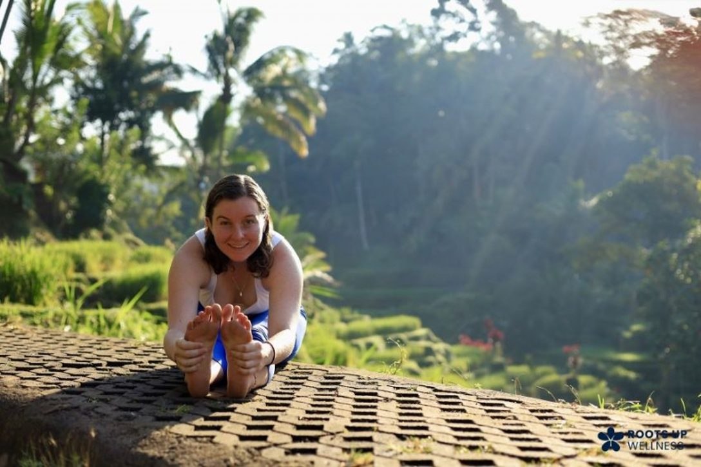

Roots Up Wellness: Elena Wigglesworth pitched from a balcony and won
Afraid of heights? Elena Wigglesworth isn't. She's here to combine her interests and push her innovation to the fullest, even if it means pitching her ideas 12 feet above the ground.
On September 17, Elena competed in Minute to Pitch It, a competition held at Entrepalooza, NC State's annual entrepreneurship festival. It's hosted by NC State Entrepreneurship.
Elena was influenced by a connection she had in her scholarship program. She signed up to push herself to keep building her business. "It forced me to talk about my business," Elena said. With only 60 seconds, she had to explain it clearly. What she didn't expect was to deliver her pitch from a balcony 12 feet above the judges and audience in Stafford Commons. Called to present second, Elena put herself on the line. She received a $500 award for Roots Up Wellness.


Roots Up Wellness aims to bring yoga, fitness classes, meditation, and retreats to local farms and green spaces, including parks and recreation spaces. It combines her passions for agriculture and wellness.
Elena's interests in fitness and wellness have been developing for years. A competitive swimmer growing up, she started teaching swimming at 11 and continued for a decade. She now works at NC State Wellness and Recreation as a certified personal trainer, registered yoga teacher, and fitness team lead.
Her interest in agriculture started in high school, when she began working on a beef cattle farm. That led to a gap year working on farms around the world, including a vegetable farm in Ireland and a permaculture-based wellness center in Switzerland. She came back wanting to tell the story of agriculture. Roots Up Wellness gives her a way to share that story while helping people take care of themselves. Her long-term goal is to open an agriculture-based community wellness center.
On October 22, Elena pitched Roots Up Wellness to Canadian billionaire Ronnen Harary through his No Experience Necessary Challenge. She is now being considered for the final round in December, with $25,000 at stake.
Elena plans to graduate in May 2028 with a double major in agricultural business management and parks, recreation and tourism management, with a concentration in tourism and event planning. That combination has prompted questions like "Are you gonna plan animal weddings?" Roots Up Wellness is a better example of how she plans to combine her passions and experiences.